准备功能
准备功能使用字母 G 后跟 3 位数字编写 (G0 - G319)。
它们总是编写在程序段的开始，用于决定工件的几何形状和 CNC 的工作条件
G00 快速定位
G01 直线插补
G02 顺时针 ( 螺旋 ) 圆弧插补
G03 逆时针 ( 螺旋 ) 圆弧插补
G04 停顿 / 中断程序段准备
G05 圆角
G06 绝对圆心坐标
G07 方角
G08 圆弧相切于前一路径
G09 三点确定圆弧
G10 图像镜像取消
G11 相对于 X 轴的图像镜像
G12 相对于 Y 轴的图像镜像
G13 相对于 Z 轴的图像镜像
G14 相对于编程方向的图像镜像
G15 纵向轴的选择
G16 两个方向和纵向轴选择的主平面
G17 主平面 X-Y 和纵向轴 Z
G18 主平面 Z-X 和纵向轴 Y
G19 主平面 Y-Z 和纵向轴 X
G20 定义工作区下限
G21 定义工作区上限
G22 激活 / 取消工作区
G28 选择第二主轴
G29 选择主主轴
G28 - G29 轴切换
G30 主轴同步 ( 偏移 )
G32 进给率 "F" 用作时间的倒数功能
G33 加工螺纹
G36 自动圆角过渡
G37 切向进入
G38 切向退出
G39 倒角
G40 取消刀具半径补偿
G41 左手刀具半径补偿
G42 右手刀具半径补偿
G45 切向控制 (G45)
G50 受控圆角
G51 预读
G52 移动到限定点
G53 相对于机床参考零点编程 (home)
G54 绝对零点偏置
G55 绝对零点偏置
G56 绝对零点偏置
G57 绝对零点偏置
G58 附加零点偏置
G59 附加零点偏置
G60 直线加工固定循环
G61 矩形加工固定循环
G62 网格加工固定循环
G63 圆形加工固定循环
G64 圆弧加工固定循环
G65 圆弧 - 弦加工固定循环
G66 不规则型腔固定循环
G67 不规则型腔粗加工
G68 不规则型腔精加工
G69 组合深孔钻削
G70 英寸编程
G71 毫米编程
G72 普通和特殊比例因子
G73 模型旋转
G74 机床参考点搜索
G75 测头运动到有接触信号
G76 测头运动到不再有接触信号
G77 轴的耦合 ( 从动轴 )
G77S 主轴速度同步
G78 取消轴的耦合 ( 从动轴 )
G78S 取消主轴速度同步
G81 钻削固定循环
G82 带停顿的钻削固定循环
G83 带固定进给量的深孔钻固定循环
G84 攻丝固定循环
G85 铰削固定循环
G86 带 G00 退回的镗削固定循环
G87 矩形型腔固定循环
G88 圆形型腔固定循环
G89 带 G01 退回的镗削固定循环
G90 绝对尺寸编程
G91 增量尺寸编程
G92 坐标预置 / 主轴速度限制
G93 极坐标原点预置
G94 进给率为毫米 （英寸）/ 分钟， mm (inches) / minute
G95 进给率为毫米 （英寸）/ 每转， mm (inches) / per revolution
G96 恒表面切削速度
G97 恒刀具中心点切削速度 |
| |
平面选择 (G16, G17, G18, G19) |
在进行下列动作时应选择平面
-圆弧插补
-控制圆角
-切向出口和入口
-倒角
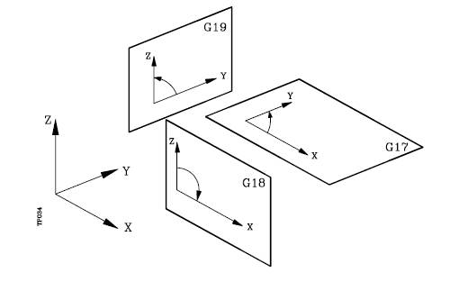
|
CNC 允许输入编程时的尺寸单位，毫米或英寸。
它有通用机床参数 “INCHES” 去定义 CNC 的尺寸单位。
然而，在程序中这些单位可以在任何时候进行改变，有两个 G 功能用于这个目的： :
. G70 使用英寸编程。
. G71 使用毫米编程。
根据编写的是 G70 还是 G71， CNC 在此以后的所有程序段中采用相应的单位。G70 和 G71 功能是模态的和不兼容的。
CNC 允许编程的数字从 0.0001 到 99999.9999 ( 可以带符号也可以不带 )，当工作 单位为毫米时 (G71)，其格式为 +/-5.4，或者以英寸为单位时 (G70)，从 0.00001 到 3937.00787 ( 可以带符号也可以不带 ) ，其格式为 +/-4.5。 然而，为了简化指令，我们可以说 CNC 允许 +/- 5.5 的格式，实际是允许 +/- 5.4 以毫米为单位和 +/- 4.5 以英寸为单位。
上电后，在执行了 M02、 M30、 EMERGENCY （急停）或 RESET （复位）后， CNC 将 采用通用机床参数 “INCHES” 中定义的单位为尺寸单位。
|
CNC允许对某个点的编程即可使用绝对坐标值G90也可使用增量坐标值G91,当使用绝对坐标时（G90）,点的坐标相对于坐标建立的原点，通常是工件零点。当使用增量坐标时（G91）,所编程的数值是刀具从所在点移动过的距离，前面的符号表示运动的方向。
功能G90/G91是模态的并且不兼容
例子中X轴用直径编程
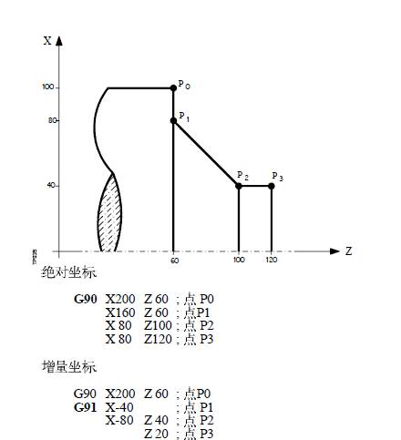
|
CNC允许以两种方式编写机床参考点搜素
G74编程时后接要完成参考点搜素的轴
CNC开始移动所有选择的轴，它们具有机床参考开关，并以轴机床参数指定的方向。
该运动以轴机床参数指定的进给率移动，直到碰到限位开关。
功能G53可以添加到任何具有路径控制功能的程序段
它只在编写相对于机床零点的程序段时使用。这些坐标可以用毫米或英寸表示，这取决于对通用机床参数的定义，当编写的功能G53没有运动信息时，它将取消当前的零点偏置，不论它是通过G54-G59编程的还是由（G92）预置的，零点偏置的预置如下：
功能G53不是模态的，因此在需要制定相对于机床零点的坐标时每次都要编写
该功能临时取消刀具半径和长度补偿
下面的例子中X轴以半径编程
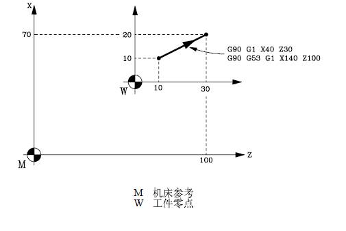
|
通过功能G92，可以选择CNC轴的任何值，另外可以限制主轴的速度
坐标预置
当用G92完成零点偏置时，CNC采用G92后面编写的坐标值为新的轴坐标
在编写G92的程序段中不能编写其他功能，编写的格式为：G92X…C+/-5.5
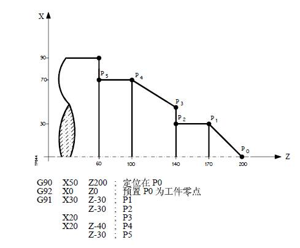
|
CNC具有零点偏置表，可以选择表中的几个零点偏置，其目的是产生独立于当前工件零点的某些工件零点。绝对零点偏置（G54,G55,G56,G57）它们必须是相对于机床零点的。
附加零点偏置（G58,G59）
功能G54,G55,G56,G57,G58,G59必须在程序段中单独编写，并按下列方式工作：
当某个G54,G55,G56,G57功能被执行时，CNC使用编写饿相对于机床零点的零点偏置，取消可能的当前零点偏置。如果某个附加的零点偏置G58或G59被执行，CNC将它的值添加到当前的绝对零点偏置。
例如：
让我们假定用下列数值初始化零点偏置表：
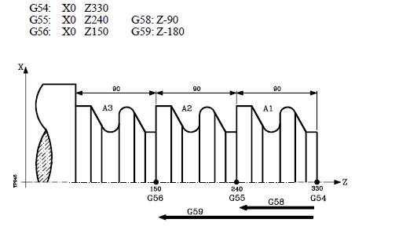
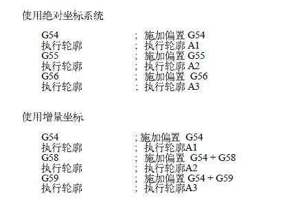
|
功能G93允许设置工作平面的任何点为新的极坐标原点。
该功能必须在程序中单独编写，它的格式为：G93 I+/-5.5 J+/-5.5
参数I和J分别定义新极坐标原点的横坐标和纵坐标轴值
它们的数值可以以半径或直径给出，这取决于轴机床参数的设置。
例子中假定X轴以半径编程
假定刀具位于X0 Y0点。
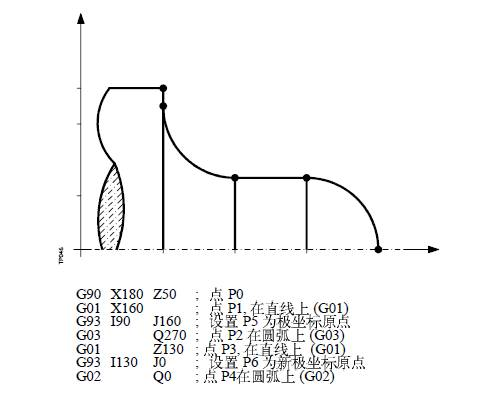
如果G93只编写在一个程序段中，机床所在点在此时成为极坐标原点。
进给率F
机床的进给率可以从程序选择，它将一直保持有效，直到编写饿另一进给率
用字母F表示，依据工作在G94还是G95，编写单位为mm/分钟或mm/转
它的编程格式为5.5（以毫米为单位），4.5（以英寸为单位）
每根轴的最大操作进给率由每根轴的机床参数限定，可以通过F0编写或给出F相应的数值。
|
当编写了 G96 时， CNC 以 F5.5 进给率作为相应工件上刀具的切削点。
使用了该功能，已加工表面的曲线部分是一致的。
在这种方式下（工作在 G96） ，为了保持切削点处速度不变，刀具中心在曲线的内外速度是不同的。
功能 G96 是模态的，即，一旦编写了它，将一直有效直到编写了 G97。
上电后，在执行了 M02, M30 后或在 EMERGENCY （急停）或 RESET （复位）后 ,CNC 采用 G97 功能。
|
CNC 能控制两根主轴:主主轴和第二主轴,两根主轴可以同时转动，但每次只能控制其中一根轴。
这种选择通过 G28 和 G29 来完成。
G28: 选择第二主轴。
G29: 选择主主轴。
一旦选择了期望的主轴，可以从 CNC 的键盘或用下列功能进行操作 :
M3, M4, M5, M19
S****
G33, G34, G94, G95, G96, G97
两根主轴都可以工作在开环或闭环方式下。
功能 G28 和 G29 是模态的，它们互不兼容。
G28 和 G29 必须单独编写在程序段中，它们是该程序段中唯一包含的信息。
上电后，在执行了 M02, M30 或在 EMERGENCY （急停）或 RESET （复位）后 ,CNC采用 G29 功能 （选择主主轴）。
|
当编写了 G97 时， CNC 以编写的 F5.5 进给率作为相应刀具中心的进给率。
在这种方式下 （工作在 G97) ， 曲线部分内外切削点的速度是减小的，以保持刀具中心速度的恒定。
功能 G97 是模态的，即，一旦编写了它，将一直有效直到编写了 G96。
上电后，在执行了 M02, M30 或在 EMERGENCY （急停）或 RESET （复位）后 ,CNC 采用 G97 功能
|
利用功能 G77S，两根主轴 ( 主主轴和第二主轴 ) 的转速可以被同步。可以用功能G78S 取消同步。始终编写 G77S 和 G78S，因为功能 G77, G78 是使轴耦合或取消耦合轴。
当主轴转速同步时，第二主轴与主主轴的转动速度相同。
功能 G77S 可以在任何时候执行，可以开环 (M3, M4) 或闭环 (M19)，主轴甚至可以有不同的范围 （档位）。
通用输出 "SYNSPEED (M5560)" 将在主轴同步时 ( 相同的速度 ) 显示高电平。
当同步取消时 (G78S)，第二主轴将重新获得它以前的速度和状态 (M3, M4, M5, M19)，主主轴继续保持当前状态。
如果在同步状态时，所编写的 S 值比最大允许值大，CNC 将在它们同步时采用最大值。当取消同步时，不再使用极限值，主主轴将采用编程的速度。当主轴速度同步时，功能 G77S 有效，利用 G30 它们可以保持一定位置的同步和在第二主轴和主主轴之间可以有一个角度的偏置，因此第二主轴将以设置的偏置距离来跟随主主轴。
编程格式 : G30 D ±359.9999 ( 偏置的角度 )
|
编写在 G00 后的运动被执行时的快速进给率由轴机床参数 "G00FEED" 指定。不管所移动轴的数量，合成的路径总是起始点和终止点之间的直线。
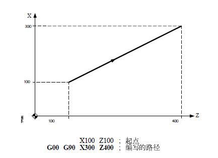
当编写 G00 时，程序中最后被编写的 F 值不被取消，当再次编写了 G01, G02 或 G03 时，该 F 值即被恢复。
G00 是模态的和 G01, G02, G03, G33，G34 及 G75 不兼容。 功能 G00 可被编写成G 或 G0。
|
在 G01 代码后编写的运动为直线运动，以编写的进给率 F 运动。
当 2 根或 3 根轴同时运动时，走的路径是起点和终点之间的直线。
机床运动的进给率 为程序中编写的 F，CNC 计算各轴的进给率以便得到合成路径的进给率为程序编写的 F 值。
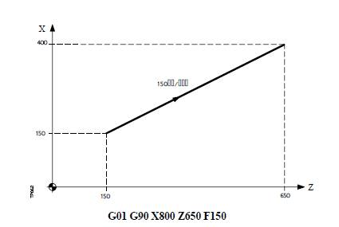
|
这里有两种方法来完成圆弧插补：
G02: 顺时针圆弧插补
G03: 逆时针圆弧插补
G02 和 G03 后编写的运动以圆弧路径执行，并以编写的进给率 F 进行。
顺时钟 (G02) 和逆时钟 (G03) 的定义根据下面所示的坐标系统确定：
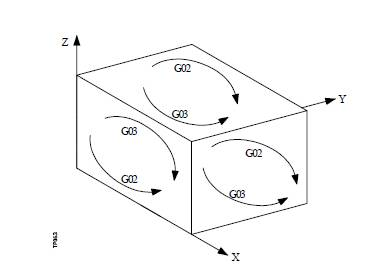
该坐标系是指刀具在工件上的运动。
圆弧插补只能在平面上执行，圆弧插补的定义形式如下：
a)迪卡尔坐标
圆弧的终点和圆心位置的坐标相对于工作平面的轴的起点。
圆心通过字母I,J,K以半径定义，I，J,K和各个轴的对应关系如下：
平面 XY: G02(G03) X±5.5 Y±5.5 I±5.5 J±5.5
平面 ZX: G02(G03) X±5.5 Z±5.5 I±5.5 K±5.5
平面 YZ: G02(G03) Y±5.5 Z±5.5 J±5.5 K±5.5
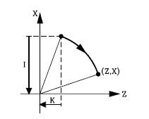
b)极坐标
有必要定义角度Q和起点到圆心的距离，根据工作平面的轴
圆心通过字母I,J,K以半径定义，I,J,K和各个轴的对应关系如下：
平面 XY: G02(G03) Q5.5 I5.5 J5.5
平面 ZX: G02(G03) Q5.5 J5.5 K5.5
平面 YZ: G02(G03) Q5.5 J5.5 K5.5
c)迪卡尔坐标和半径编程
定义圆弧的终点坐标和半径
编写格式：
平面 XY: G02(G03) X5.5 Y5.5 R5.5
平面 ZX: G02(G03) X 5.5 Z5.5 R 5.5
平面 YZ: G02(G03) Y 5.5 Y 5.5 R5.5
如果编写完整的圆，并采用半径编程，CNC将显示相应的错误，因为有无数个答案。
如果圆弧小雨180°，编写半径时用正号，如果圆弧大于180°编写半径时用负号。
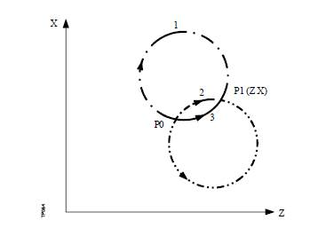
如果P0起点P1是终点，通过这两点的路径有4个数值相同的圆弧。
|
通过增加功能 G06 到圆弧插补程序段，可以用绝对坐标编写圆弧中心的坐标 (I,J,或 K) ，即相对于坐标零点而不是圆弧的起点。
功能 G06 不是模态的，因此在任何情况下需要以绝对坐标编写圆弧中心的地方都要编写 G06，G06 可以写成 G6。
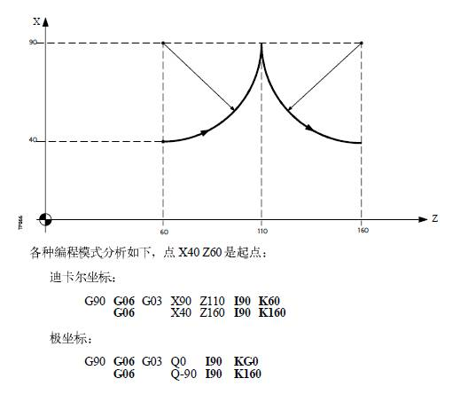
|
通过功能 G08 可以编写一圆弧与前一段路径相切，而不用编写圆心坐标 (I.J &K) 。
只需要定义圆弧的终点坐标，采用极坐标或笛卡尔坐标要依照工作平面的轴定义。
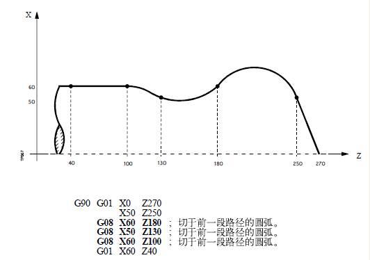
|
利用功能 G09 可以通过编写圆弧终点和中间点 （圆弧的起点是运动的开始点）定义圆弧。换句话说，用编写圆弧的中间点代替编写圆弧的中心坐标。
圆弧的终点用笛卡尔坐标或极坐标定义，圆弧的中间点总是用笛卡尔坐标定义，用字母 I,J, 或 K，与每个轴的对应关系如下：
轴 X, U, A ==> I
轴 Y, V, B ==> J
轴 Z, W, C ==> K
螺旋插补
螺旋插补由工作平面的圆弧插补和编程的其它轴的移动组成。
螺旋插补编写在一段程序中，圆弧插补通过功能 : G02, G03, G08 或 G09 实现。
对于旋转大于一转的螺旋插补，必须且只能编写另一根直线轴的移动
螺距必须用字母 I，J，K 定义 （5.5 格式），这些字母和轴的
对应关系如下：
I）用于X,U,A轴
J）用于Y,U,B轴
K)用户Z,W,C轴
|
利用功能 G37 可以连接两段无关的路径，而不用计算它们的交点。
功能 G37 不是模态的，因此必须在希望启用带有切向进入的加工操作时编写
如果起点为 X20 Z60 且希望加工一圆弧 （靠近的是直线段），应编写为：
G90 G01 X20 Z30
G03 X40 Z10 R20
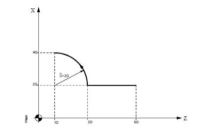
|
功能 G38 在加工操作的结尾处使刀具切向退出。路径必须是直线 (G00 或 G01)，否则， CNC 将显示相应的错误信息。
功能 G38 不是模态的，因此必须在希望刀具切向退出时编写。在 G38 后始终接 R5.5 数值格式， 用于指定 CNC 获得切向退出工件的圆弧半径。R 的 值必须始终是正的
例子中X轴用半径编写“
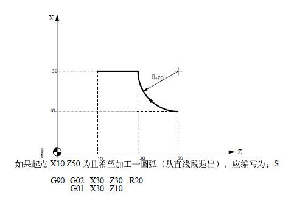
|
在铣削操作时，利用功能 G36，可以利用特定的半径去圆一个角，而不必计算圆弧的中心点及起点和终点。
功能 G36 不是模态的，因此必须在需要控制圆角过渡的地方编写。
该功能必须编写在希望定义圆角的程序段。
例子中X轴以直径编写：
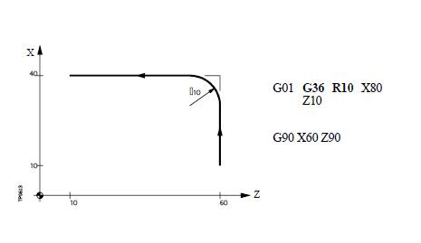
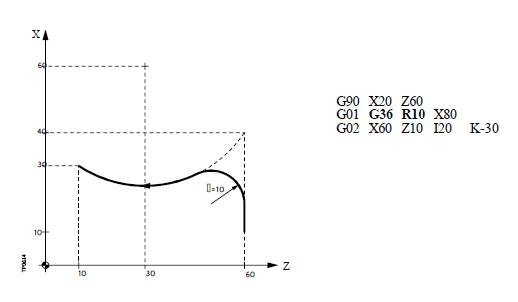
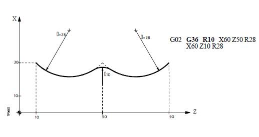
|
在铣削操作时，有可能 （使用 G39）在 2 根直线之间倒角，而不需要计算交点。
功能 G39 不是模态的，因此在需要倒角的地方要编写。
该功能应编写在程序段中需要定义倒角的地方。
G39 后接 R5.5 数值，它表示要完成倒角处端点间的距离。该 R 值必须始终是正的。
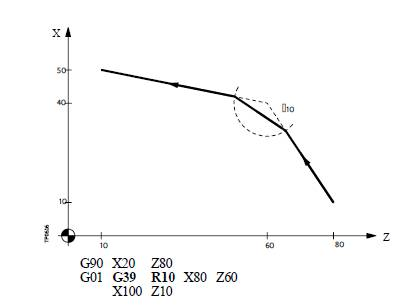
|
如果机床主轴装有旋转编码器，可以利用 G33 功能加工螺纹。
虽然加工螺纹通常是沿着一根轴的整个长度，但 CNC 可以同时对多根轴进行插补。
编程格式：

|
|